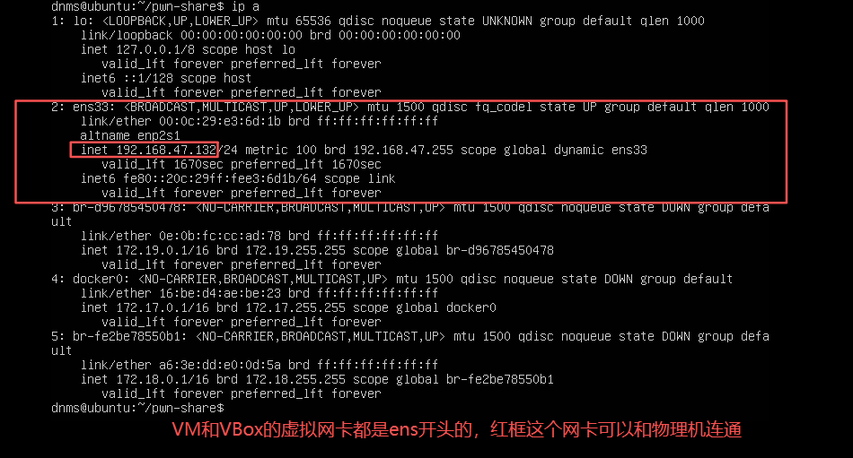
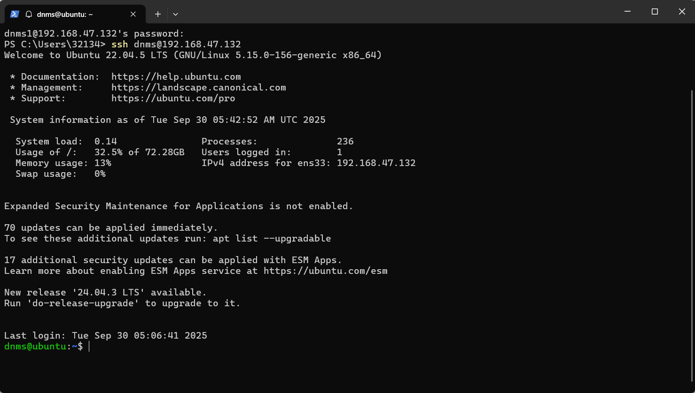

0x02 Linux 基础及工具¶
什么是Linux¶
一个 开源、社区生态极好、应用极为广泛、极简 的 操作系统内核
有许多基于Linux内核开发的 操作系统，如 Kali、Ubuntu......
作为安全从业人员，熟练使用Linux系统可以说是最基本的要求
由于我们现在使用的都是Windows系统，直接在电脑上面把Windows系统刷成Linux也不太合适......毕竟现在办公学习Windows还是主力，所以我们需要使用一个虚拟化技术搭建的 虚拟机来完成
虚拟机¶
现在主流的虚拟机有
- VMware(付费，个人认为比VBox好用)
- VirtualBox(免费，且各门专业课都在用，推荐⭐)
- Docker（本质上是一个容器，也可以做虚拟机，就是新手确实会遇到各种问题，暂时不推荐...）
安装过程这里不介绍了，大家自行安装即可~
安装完毕后我们下载Ubuntu20.04-server版的镜像.iso文件，导入虚拟机并完成初始安装
别问我为什么不下Desktop版，问就是专业素养hhh
纯命令行版有助于戒掉鼠标点点点 的 低效工作方式，也有助于你更快熟悉Linux命令
附几个教程链接
安装完毕并重启之后会是这样的页面

你可以用你自定的账号密码进行登录
登录键入密码时不会显示字符，但实际上是正确输入了的，需要考验你的盲打技术~
登陆完毕显示如下的内容

命令行光标处所在行前面的提示符为 用户名@主机名:当前目录 $
美元符号$后是你键入命令的区域
路径的有关描述¶
. 代表当前路径
.. 代表上一级路径
/ 代表根目录（Linux文件系统没有C盘D盘的划分，因此根目录并没有盘符）
~ 代表当前用户家目录
一些基础指令¶
<press Ctrl+C> # 取消执行正在执行的命令（已完成的命令无效）
pwd # 输出当前路径
ls # 列出当前路径的所有文件和子路径
cd <path> #跳转至<path>目录下
# cd举例：
dnms@ubuntu:~$ cd ./pwn-learn # 回车后执行该行命令
dnms@ubuntu:~/pwn-learn$ # 可以看到命令提示符从当前目录跳转至子路径pwn-learn
touch <file path and file name> # 在指定目录下创建指定名字的文件
# touch举例
dnms@ubuntu:~$ touch woohoo~ # 在当前目录创建了woohoo~文件
dnms@ubuntu:~$ touch ./pwn-learn/wow # 在./pwn-learn/目录下创建了wow文件
mkdir <directory path and name> # 创建新目录
sudo <other command> # 用管理员权限执行<other command>
apt # 一个ubuntu内置的包管理软件，你可以理解为"应用商店"，需要sudo权限
sudo apt update # 从索引网站获取并更新应用列表
sudo apt install <package-name> # 从应用列表中查询相关软件包并下载安装
ssh <user>@<host name or IP> # 以某用户远程登陆到某个主机
# 如果没有配置免密登录则需要输入密码

配置SSH登录¶
由于ubuntu-server自身的shell字很小且难用，我们可以使用物理机上的终端，使用SSH远程登陆
首先我们要知道我们这台Ubuntu的IP地址，使用ip a指令可以获得网络详细信息

可以得知我这台ubuntu虚拟机IP为192.168.47.132
新建一个终端

进入到终端后是这样的界面

使用ssh <user>@<host name or ip>连接ubuntu虚拟机
因为我配置了免密登录，所以这里用不存在的dnms1用户举例

输入密码后登陆成功，这个终端的可读性、复制粘贴操作、字体美观程度都要优于内置shell

接下来配置免密登录。
首先另开一个终端，为主机配置SSH远程连接密钥，输入以下命令
ssh-keygen
如果不需要将你的密钥应用在真实生产环境的话，一路Enter即可
进入到C:\Users\<你的用户>\.ssh目录下
这里如果找不到
.ssh目录，记得把文件资源管理器的 查看->显示->隐藏的项目 选项开启同时记得把文件后缀名显示打开
找到.pub后缀的公钥文件，使用任意编辑器打开，全选复制内容，粘贴至ubuntu的~/.ssh/authorized_keys文件内
这里使用ubuntu自带的vim编辑器进行编辑，具体如何使用vim可以问AI或者参考以下文章
极其不建议只是盲目地CV指令，手写一遍也比直接CV要好~
如果你不想学怎么使用vim，这里简单介绍：
使用Vim打开文件：
vim <file path>进入编辑模式：press button
i退出编辑模式：press button
Esc保存并退出：在编辑模式外键入
:wq!不保存退出：在编辑模式外键入
:qa!

编辑完成之后可以为这个远程登陆选项添加别名，以便快速登陆。
使用任意编辑器打开物理机的C:\Users\<user>\.ssh\config（没有则新建）
添加一组内容：
Host <你为这个登陆选项起的别名>
HostName <主机(虚拟机)的域名或IP，通常是IP>
User <你登入虚拟机的用户名>
# 例如我的Config
Host dnms
HostName 192.168.47.132
User dnms
保存退出后，当你再次新建终端并ssh登入虚拟机时，直接键入ssh <别名>就可以无需密码地登入
一些工具的安装¶
科学上网¶
掌握科学上网的能力
别问我，我什么都不知道，一切描述仅供学习，不得用于其他用途
GDB¶
最好用最基础的 反汇编工具，需要搭配pwndbg插件食用~
sudo apt install gdb
# 找一个比较体面的目录，用来放置这个项目，这里举个例子
mkdir ~/tools-for-pwn && cd ~/tools-for-pwn
git clone https://github.com/pwndbg/pwndbg.git
# 等待克隆pwndbg结束
cd pwndbg && chmod +x ./setup.sh
# 每个人可能遇到的问题不太一样，出现问题随时线上线下问我~
python-pwntools¶
sudo apt update
sudo apt install python3 python3-pip python3-dev git libssl-dev libffi-dev build-essential -y
python3 -m pip install --upgrade pip
pip3 install --upgrade pwntools
# 如果上述第5行命令下载较慢，可以更换国内镜像源
pip install --upgrade pwntools -i https://pypi.tuna.tsinghua.edu.cn/simple